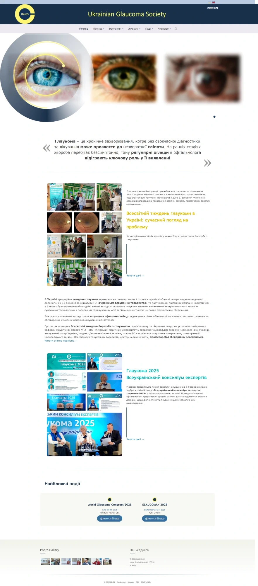
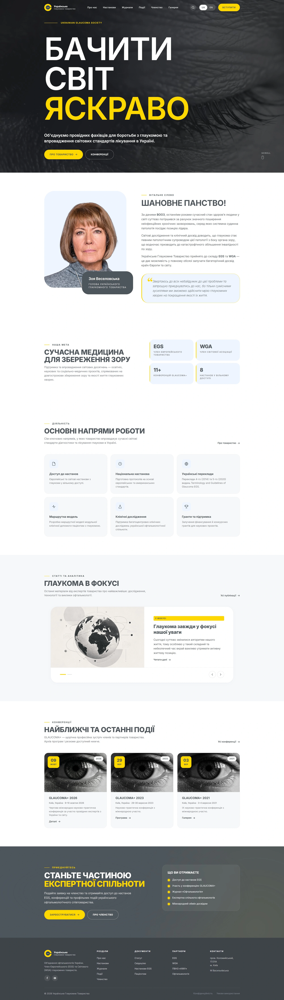
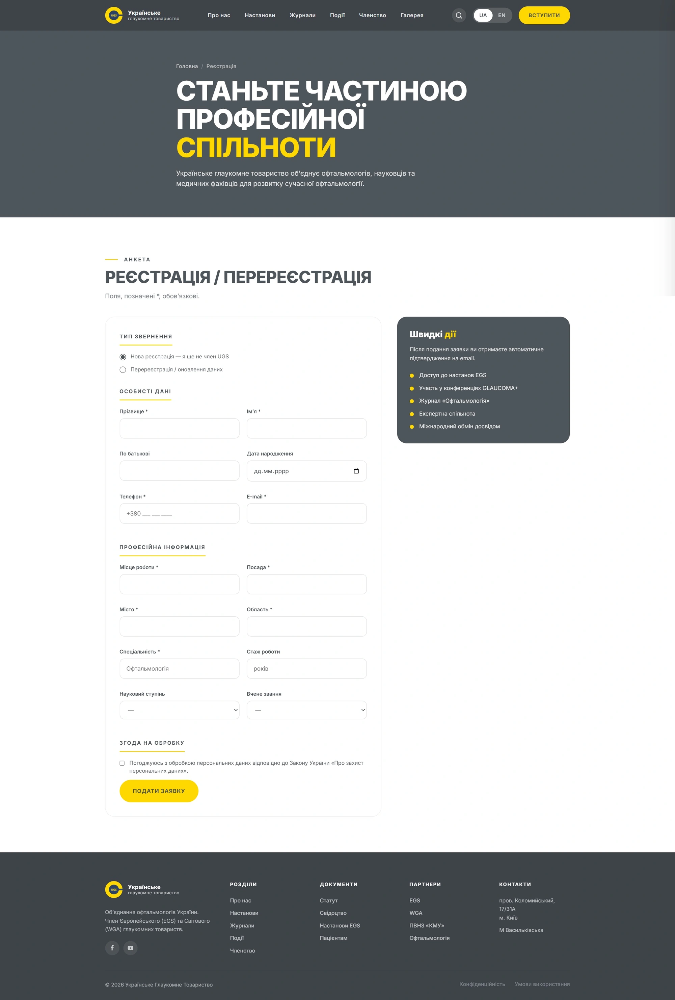

Українське глаукомне товариство: новий образ медичної спільнотиUkrainian Glaucoma Society: a new look for a medical community
Товариство об'єднує провідних українських офтальмологів, проводить конференції і впроваджує європейські стандарти лікування глаукоми. Старий сайт не відповідав рівню організації. Ми розробили концепцію, стиль і новий дизайн, а потім зібрали сайт на WordPress.The society unites Ukraine's leading ophthalmologists, runs conferences and brings European glaucoma care standards to Ukraine. The old site didn't match the organisation's standing. We created the concept, style and new design, then built the site on WordPress.
Головна сторінкаHomepage


↕ Гортайте всередині вікон↕ Scroll inside the windows
Вступ до товариства онлайн, з будь-якого пристроюJoining the society online, from any device
Окрема сторінка реєстрації для лікарів, які хочуть вступити до товариства, і повністю адаптивна версія для телефона.A dedicated sign-up page for doctors who want to join, and a fully responsive phone version.


ЗадачаThe brief
Старий сайт виглядав застаріло: дрібний текст, перевантажені сторінки, слабка структура. Для організації, яка входить до Європейського (EGS) і Всесвітнього (WGA) глаукомних товариств і проводить міжнародні конференції, це не працювало на довіру.The old site looked dated: small text, cluttered pages and a weak structure. For an organisation that belongs to the European (EGS) and World (WGA) glaucoma associations and runs international conferences, it didn't build trust.
Потрібен був сучасний, серйозний сайт, який команда товариства зможе наповнювати сама, без розробника.They needed a modern, credible site the society's team could update on their own, without a developer.
Що зробилиWhat we did
- 01Концепція і стиль.Concept and style. Ідея «Бачити світ яскраво»: чорно-білі крупні плани очей і жовтий акцент з логотипа. Нові шрифти, кольори і правила для всіх сторінок.The "See the world vividly" idea: black-and-white eye close-ups with a yellow accent from the logo. New fonts, colours and rules for every page.
- 02Структура для різних аудиторій.Structure for different audiences. Вітальне слово голови, мета і членство в EGS та WGA, напрями роботи, статті, конференції і заклик вступити.A welcome from the president, mission and EGS/WGA membership, areas of work, articles, conferences and a call to join.
- 03Дизайн усіх сторінок.Design of every page. Головна, настанови, журнали, події, членство, реєстрація, мобільна версія.Homepage, guidelines, journals, events, membership, sign-up and mobile.
- 04WordPress зі зручною адмінкою.WordPress with an easy admin. Статті, події, конференції і документи команда додає сама, без розробника.The team adds articles, events, conferences and documents themselves, without a developer.
- 05Дві мови.Two languages. Українська й англійська для міжнародних партнерів.Ukrainian and English for international partners.
РезультатResult
Сайт, який виглядає на рівні європейської медичної спільнотиA site that looks the part of a European medical community
Чіткий стиль, зрозуміла структура і самостійне наповнення. Лікарі можуть вступити до товариства онлайн, а партнери бачать міжнародний рівень організації.A clear style, a clear structure and self-managed content. Doctors can join online, and partners see the organisation's international standing.